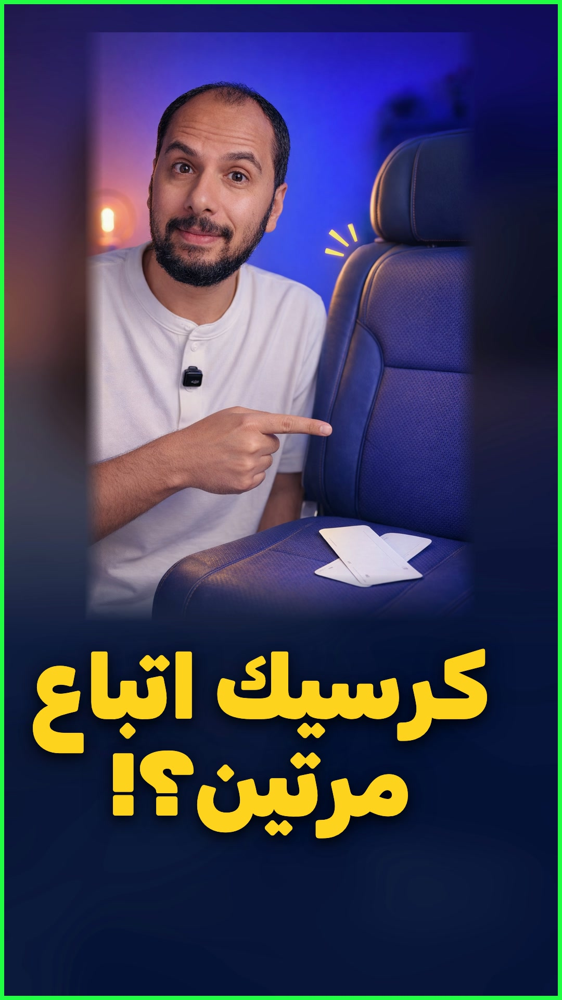

اقتصاد
ليه شركات الطيران بتبيع تذاكر لركاب أكتر من عدد كراسي الطيارة نفسها؟
شركات الطيران بتبيع تذاكر زيادة عن الكراسي عشان في ركاب بيحجزوا ومابيجوش، وبتحسب الزيادة من رحلات قديمة على نفس الخط. ولو الحسبة غلطت، بتدور على متطوعين الأول، وفي أوروبا القانون بيحدد التعويض.

شغّل الفيديولو حجزت تذكرة طيارة وعرفت إن الشركة باعت تذاكر أكتر من الكراسي، أول حاجة هتيجي في دماغك إنها غلطة في الحجز أو طمع. بس شركات الطيران بتوصف الموضوع على إنه سياسة محسوبة: في ركاب معاهم تذاكر ومابيظهروش، والكرسي الفاضي مش بيجيب حاجة.1
وفي فرق بين كلمتين بتسمعهم كتير: الرحلة بتبقى oversold لما الشركة تبيع تذاكر أكتر من الكراسي، وبتبقى overbooked لما ناس أكتر من الكراسي يجوا فعلًا. يعني بيع تذاكر زيادة ممكن يوصل لمشكلة، وممكن لأ.2
ليه شركات الطيران بتبيع كراسي زيادة؟
شركات الطيران بتبيع كراسي زيادة بشكل روتيني عشان تعوّض التكلفة اللي بتضيع عليها من الإلغاءات ومن الركاب اللي مابيجوش، لأن الكرسي الفاضي مش مربح.1
طب بتعرف تبيع كام تذكرة زيادة إزاي؟ نسبة الغياب اللي الشركة بتحدد على أساسها عدد التذاكر الزيادة بتتحسب من بيانات الرحلات اللي فاتت بين نفس النقطتين.1 يعني كل شركة بتقدّر الغياب خط بخط، وتبيع تذاكر زيادة على قده. وعشان كده مش هتلاقي هنا نسبة غياب واحدة تنفع لكل الرحلات.
إيه اللي بيحصل لو الركاب كلهم جم؟
أغلب الوقت الحسبة بتظبط.2 بس لو جه ركاب أكتر من عدد الكراسي، الشركات عمومًا بتبدأ تسأل مين يتطوع يسيب كرسيه ويسافر على رحلة تانية مقابل تعويض. ولو المتطوعين ماكفوش، بتضطر تختار ركاب وتمنعهم من الركوب غصب عنهم.23
المنع من الركوب بيحصل قد إيه؟
في أمريكا، موقع Upgraded Points حلّل بيانات وزارة النقل الأمريكية عن أكبر 10 شركات طيران أمريكية، من الربع الأول من 2023 للربع التاني من 2024. ولقى إن في المتوسط 0.47 راكب من كل 10,000 اتمنعوا من الركوب غصب عنهم، و2.85 من كل 10,000 سابوا كراسيهم بالتطوع.4 يعني المنع الإجباري بيحصل في المتوسط لأقل من راكب واحد من كل 10,000.
بس ده متوسط، والفرق كبير بين شركة والتانية: أعلى شركة في نفس التحليل كان عندها 3.21 لكل 10,000 راكب.4 وفي بيانات الوزارة اللي نشرتها Statista، أعلى معدل منع إجباري بين شركات الطيران الأمريكية في 2023 كان 3.51 لكل 10,000 راكب.5 وخد بالك إن الأرقام دي عن أكبر شركات الطيران الأمريكية بس، مش عن العالم كله.
ولو اتمنعت من الركوب في أوروبا؟
في الاتحاد الأوروبي، اللائحة 261/2004 بتحدد تعويض الراكب اللي اتمنع من الركوب غصب عنه حسب طول الرحلة: 250 يورو للرحلات اللي 1,500 كيلو أو أقل، و400 يورو للرحلات جوه الاتحاد الأوروبي اللي أطول من 1,500 كيلو وللرحلات التانية من 1,500 لـ3,500 كيلو، و600 يورو لأي رحلة تانية.6
واللائحة بتسري على الركاب اللي طالعين من مطار في الاتحاد الأوروبي، وعلى الرحلات اللي جاية من بره الاتحاد لجوه لو شركة الطيران من الاتحاد الأوروبي. والتعويض ممكن يتراوح من 125 لـ600 يورو حسب المسافة، وبيتنص لو الرحلة البديلة اللي عرضتها الشركة وصّلتك متأخر مش أكتر من 2 أو 3 أو 4 ساعات حسب طول الرحلة.7
يعني الكرسي الزيادة ده رهان؟
دي قراءتي أنا، مش معلومة من مصدر: الكرسي الزيادة رهان محسوب من الشركة، والتعويض هو التمن اللي بتدفعه لما الرهان يخسر.
أسئلة شائعة
يعني إيه overbooking؟
يعني ركاب أكتر من عدد الكراسي جم فعلًا للرحلة. وده غير oversold، اللي معناه إن الشركة باعت تذاكر أكتر من الكراسي، وده ممكن يوصل لـoverbooking وممكن لأ.
هل شركة الطيران تقدر تمنعني من الركوب؟
لو الركاب اللي جم أكتر من الكراسي ومالقتش متطوعين كفاية، الشركة بتختار ركاب وتمنعهم من الركوب غصب عنهم. بس الأول بتدور على متطوعين مقابل تعويض.
التعويض في أوروبا بيتحدد إزاي؟
حسب طول الرحلة، وبيتنص لو الرحلة البديلة وصّلتك متأخر مش أكتر من 2 أو 3 أو 4 ساعات حسب المسافة. واللائحة بتسري على الطالعين من مطارات الاتحاد الأوروبي، وعلى شركات الاتحاد الأوروبي اللي جاية من بره لجوه الاتحاد.
المصادر
- Encyclopaedia Britannica · undated "Why do airlines overbook seats on flights?"
- One Mile at a Time · undated "Why Do Airlines Oversell (& Overbook) Flights?"
- Time Out · 2024 "These U.S. airlines have the most oversold flights";
- PR Newswire (Upgraded Points) · 2024 "Upgraded Points Reveals the Top Airlines Most Likely to Bump You";
- Statista (U.S. DOT data) · 2024-03-01 "Rate of involuntary denied boardings in 2023, by U.S. airlines";
- EUR-Lex · undated "EU air passenger rights in case of denied boarding, a delayed flight or a cancelled flight"; (summary of Regulation (EC) No 261/2004)
- Europäisches Verbraucherzentrum Österreich (europakonsument.at) · undated "Your Air Passenger Rights";
الصور
- AI-generated image: rows of empty economy seats in an airplane cabin (AI) (Nano Banana Pro)
- AI-generated image: a generic paper boarding pass (AI, cut out) (Nano Banana Pro)
- AI-generated image: one empty airplane window seat (AI) (Nano Banana Pro)
- AI-generated image: an airport departure gate at dusk, no people (AI) (Nano Banana Pro)
المؤثرات الصوتية
- Sound: «VHS Glitch» by Sassaby — CC0 1.0 — https://freesound.org/people/Sassaby/sounds/264935
- Sound: «Glitch 01» by JacksonMiller0 — CC0 1.0 — https://freesound.org/people/JacksonMiller0/sounds/237607
- Sound: impact-punch — CC0-1.0 — https://kenney.nl/assets/impact-sounds